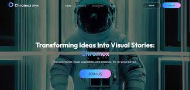
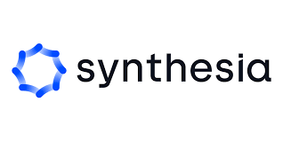

Browse 5+ Best Video Generating Tools
CHROMOX
Chromox AI seems to refer to an AI-powered tool that can transform text into videos and create visually appealing stories CHROMOX.
FLICKIFY

Flickify AI is an AI-powered tool that can turn articles, blogs, and text into professional-looking videos in a matter of minutes. FLICKIFY.
SHUFFII
Shuffll is an AI-powered video production platform that can create short videos with a few clicks using AI transcription tools.
It is a free service that can help users create professional-looking videos quickly and easily. Shuffll is listed under the "Video" category
in the Awesome AI Tools repository
and is also mentioned in the AI-Infinity repository. It is included in the AI Tools Databaseand is featured in the ultimate AI automation guide
SHUFFll.
SYNTHESIA
 Synthesia.io is an AI-powered video creation platform that allows users to create professional-looking videos without the need for mics, cameras,
actors, or studios.
SYNTHESIA.IO.